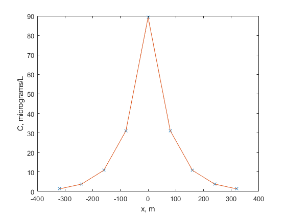

close all
clc
W = 246;
k_1 = 0.25;
Q = 3.13;
A = 72600;
D =60*24;
x = -320:80:320;
v = Q/A;
m = sqrt(1+((4*k_1*D)/(v^2)));
C_0 = W/(m*Q);
r_1 = v*(1+m)./(2*D);
r_2 = v*(1-m)./(2*D);
for i = 1:length(x)
if x(i) <= 0
C_x(i) = C_0*exp(r_1*x(i));
elseif x(i) >= 0
C_x(i) = C_0*exp(r_2*x(i));
end
C_x(i) = C_x(i)*10.^6
end
plot (x,C_x,'x')
hold all
plot (x,C_x)
xlabel('x, m');
ylabel('C, micrograms/L');
C_x =
1.3173
C_x =
1.3173 3.7797
C_x =
1.3173 3.7797 10.8453
C_x =
1.3173 3.7797 10.8453 31.1193
C_x =
1.3173 3.7797 10.8453 31.1193 89.2930
C_x =
1.3173 3.7797 10.8453 31.1193 89.2930 31.1194
C_x =
1.3173 3.7797 10.8453 31.1193 89.2930 31.1194 10.8454
C_x =
Columns 1 through 7
1.3173 3.7797 10.8453 31.1193 89.2930 31.1194 10.8454
Column 8
3.7797
C_x =
Columns 1 through 7
1.3173 3.7797 10.8453 31.1193 89.2930 31.1194 10.8454
Columns 8 through 9
3.7797 1.3173
